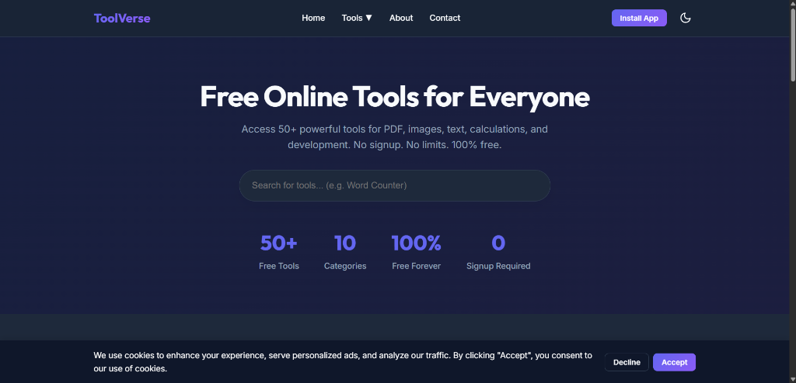
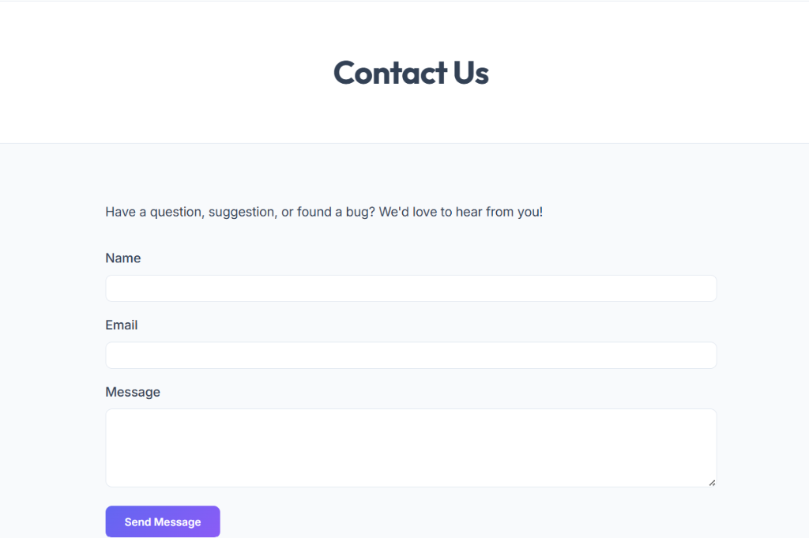
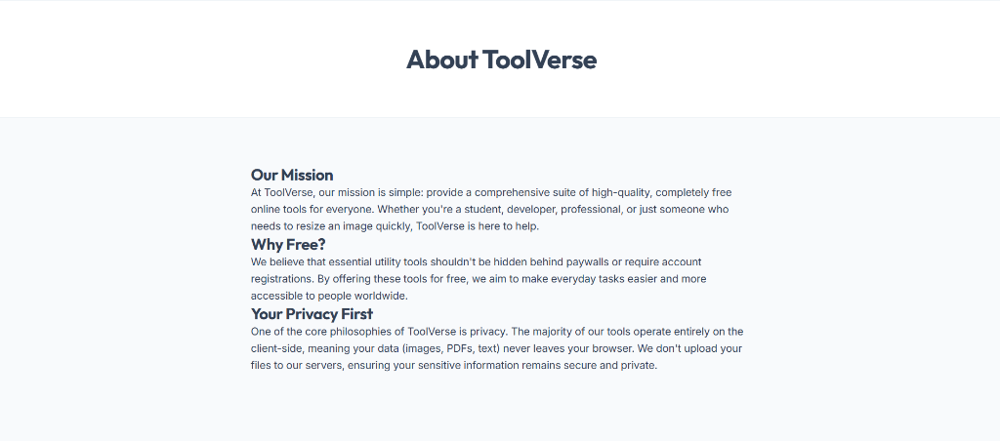
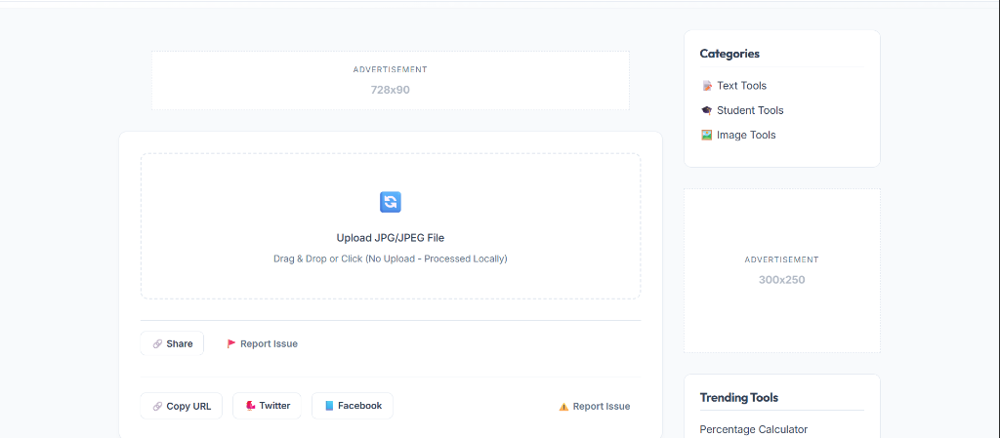

ToolVerse
70+ privacy-first online utilities built with a static-first architecture.

Redefining Utilities.
Problem
Online utility tools (converters, calculators, formatters) are overwhelmingly ad-heavy, painfully slow, and require a constant internet connection. More critically, they force users to upload sensitive files to third-party servers, compromising privacy and security.
Solution
ToolVerse acts as a completely offline-capable Progressive Web App. By shifting all computation to the client-side utilizing modern Web APIs, it eliminates server latency, ensures zero-data-retention privacy, and provides an instant, ad-free experience.
Target Users
Developers, students, and professionals who need instant, reliable access to essential digital utilities without sacrificing their data privacy or dealing with bloated interfaces.
Key Objectives
Achieve a perfect 100 Lighthouse score across performance, accessibility, best practices, and SEO. Ensure the app works seamlessly offline and can be installed natively on any device.
Minimal by necessity.
Premium by choice.
The interface is intentionally stripped down. When users need a tool, they want a result, not an onboarding flow. Every pixel serves a functional purpose.
Accessibility
High contrast ratios, ARIA labels for dynamic content, and full keyboard navigation support ensure the platform is usable by everyone.
Typography
A calculated typographic scale using System fonts combined with Inter for maximum legibility and zero layout shift during loading.
Visual Hierarchy
Negative space is used aggressively to separate categories. Tools are identified by clear, recognizable iconography rather than dense text.
Privacy-First Approach
The design communicates safety. Explicit UI indicators reassure the user that "Processing occurs locally" and "No files are uploaded."
Engineered for focus.



A complete utility suite.
- Search: Instant, fuzzy matching across 50+ tools.
- Categories: Intelligent grouping for rapid discovery.
- PWA: Fully installable as a standalone application.
- Dark Mode: Native system preference synchronization.
- Client-Side: Zero server uploads. Total data privacy.
- Offline Support: Tools function without an internet connection.
- Responsive: Fluid layouts from 320px mobile to 4K desktop.
- SEO: Statically generated routes for maximum search visibility.
Static first. Blazing fast.
ToolVerse bypasses the complexity of modern heavy frameworks by utilizing a highly optimized HTML, CSS, and Vanilla JavaScript architecture. This deliberate choice eliminates hydration overhead, ensuring a sub-second Time to Interactive (TTI).
The build system pre-renders tools as static files, resulting in a perfect 100 Lighthouse score. Because processing logic relies entirely on Web APIs (like FileReader and Canvas), the server acts merely as a CDN for static asset delivery.
Building at Scale
- Managing 50+ Tools: Creating a reusable architectural pattern so new tools can be added without duplicating boilerplate code.
- Client-Side Constraints: Complex tasks like image compression and PDF manipulation had to be engineered purely in JS to avoid server dependency.
- Offline Caching: Designing a Service Worker strategy that caches all 50 logic files without overwhelming the browser's storage limit.
The Impact
- Performance: Near-instant load times with a 100/100 Lighthouse Performance score.
- Privacy: 100% guarantee of data retention since no user files ever touch a backend server.
- Scalability: The static architecture scales infinitely at near-zero hosting cost.
- Developer Experience: A clean, modular codebase allows a new tool to be authored and deployed in minutes.
Lessons Learned
ToolVerse proved that you don't always need React or Vue to build complex, stateful applications. Vanilla JS, when structured correctly with modules, is incredibly powerful. Furthermore, pushing computation to the edge (the user's device) is not just a privacy win—it's a massive cost-saving measure for hosting.
Future Improvements
Moving forward, the platform will integrate WebAssembly (Wasm) modules for computationally heavy tools like video encoding or complex document generation, bridging the gap between web applications and native desktop software.